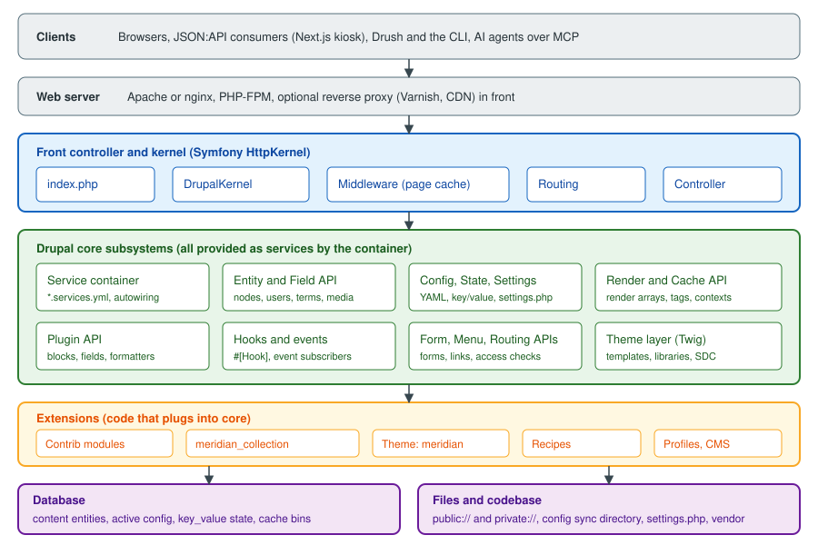

Drupal: Introduction and Architecture
|
This content was generated with the assistance of AI and should be verified against the official documentation before being relied on in production. |
This page is the foundation of the Drupal sub-section. It explains what Drupal is, how its code is organised, and what happens inside the application between the moment a web server receives a request and the moment HTML (or JSON) goes back to the client. Every later page builds on the vocabulary introduced here: module, theme, profile, recipe, service, entity, bundle, field, configuration, state, render array, cache tag, plugin, hook and event.
It was written against Drupal 11.4.x (11.4.0 was released on 1 July 2026), with Drush 13 or 14 and PHP 8.3 or later, and
the facts were checked against the official documentation on 2026-10-30. The running example is the Meridian Museum,
a fictitious regional science museum whose site is built in the other pages: the custom module meridian_collection,
the theme meridian and the recipe meridian_events. Drupal 12.0.0 is scheduled for the week of 2026-12-07 and the end of
life of Drupal 10 for 2026-12-09, so both are described as upcoming events, not as facts of the past. New sites start on
Drupal 11.4 (see Versions, release cycle and support).
What Drupal is
The official overview calls Drupal a free and open-source content-management framework. The word framework is deliberate. Drupal can be installed and used as a ready-made website, but its value is that the same code base provides the building blocks to model almost any content and to expose it through almost any channel. Four traits characterise it:
- Structured content
-
Content is not a blob of HTML. A site builder defines content types (for example
exhibition,eventandnewsfor the Meridian Museum), and each type is a list of typed fields (a date range, a hero image, a reference to collection objects, a formatted text). The same content can then be listed, filtered, translated, reused in many places and delivered as HTML or JSON. The pages Content types and fields and Field types and entity references cover the site-builder side. - Fine-grained access control
-
Every action is guarded by a permission granted to roles (Administrator, Content Editor, Curator, Reviewer, Member), and entity access can be refined per bundle, per field, per revision state or per custom rule. See Users, roles and permissions and Access control and permissions in code.
- Multilingual by design
-
Interface text, content entities, configuration entities and URLs can all be translated, and a site can have any number of languages. The Meridian Museum is English by default with Spanish added. See Multilingual.
- API-first
-
Core ships JSON:API, which exposes every entity type without configuration, and a REST module with serialization. GraphQL and OAuth are contributed projects. A front end such as a Next.js "gallery kiosk" can therefore use Drupal purely as a content back end. See JSON:API and Decoupled Drupal with Next.js.
Different people meet different parts of this model. An editor sees forms and the administration toolbar; a site builder assembles content types, views, blocks and permissions in the user interface and exports the result as configuration; an administrator operates the code base with Composer and Drush; a themer writes Twig templates and libraries; and a developer writes modules in PHP. The rest of this page is written for the last three, but each concept is introduced from the user interface first.
Core, contributed projects and Drupal CMS
Drupal software is delivered in three layers, and being clear about the layers avoids many support questions.
- Drupal core
-
The
drupal/corepackage: the kernel, the APIs, the modules that every site needs (such as System, User, Node, Field, Views, Media, Language, Config) and a few themes and installation profiles. Core is versioned and released by the core maintainers on a fixed schedule. - Contributed ("contrib") projects
-
Modules, themes, profiles and recipes maintained by community members and companies and hosted on drupal.org. The official overview counts more than 40,000 modules and more than 2,500 themes. Examples used later in this sub-section are Pathauto, Admin Toolbar, Webform, Search API, Simple OAuth, GraphQL, Project Browser, Automatic Updates, Canvas and the AI module. Each project has its own version number and its own release cycle, and its
*.info.ymldeclares which core versions it supports. Several modules that used to be in core now live in contrib (see Removed core modules and their replacements). - Drupal CMS
-
A curated Drupal 11 distribution, first released in January 2025, that wraps core in a set of recipes so that a site builder can begin from a useful product instead of an empty system. It is not a fork: it is core plus contributed projects plus recipes, installed with Composer. Drupal CMS 2.x makes Canvas the default page-building editor and offers the site templates Byte, Starter (using the Mercury theme) and Blank, plus an optional AI assistant. Version 1.x is no longer supported. Recipes have no update path, so once a recipe has been applied the result is ordinary Drupal configuration and content that you maintain like any other. The documentation of Drupal CMS has moved to
project.pages.drupalcode.org/drupal_cms. See Drupal CMS and site templates.
A distribution is the older name for a packaged starting point (core, modules, configuration and an installation profile).
The word is still used officially, and Drupal CMS is the best-known current example. The practical rule is simple: the code
that you deploy is always a Composer project (drupal/recommended-project) that requires core and every contributed
project explicitly, whichever starting point you used.
The license, the Drupal Association and the community
Drupal’s PHP code is distributed under the GNU General Public License (GPL); the official documentation is licensed under Creative Commons Attribution-ShareAlike 2.0. The licence has a practical consequence for agencies and developers: custom code that is distributed (for example a module published on drupal.org, or a distribution handed to a customer) is distributed under the GPL as well, while code that stays inside one organisation’s deployment is not "distributed". The name Drupal is a registered trademark held by Dries Buytaert, the project’s founder, which is why the figures in this sub-section are original drawings and do not use the project’s logo.
The Drupal Association is the non-profit organisation that supports the project. It runs drupal.org (issue queues, the project and release infrastructure, the packaging that Composer reads) and the DrupalCon conferences. Day to day, the work is done by a community of individual and company contributors organised around issue queues, Slack, working groups ("initiatives") and local meetups. The Drupal Security Team coordinates security advisories for core and for contributed projects that opt in to security coverage. How to take part is covered in Contributing and the Drupal community.
A short history
The history matters because the code and the books you find online come from different eras, and the era decides which API to use.
| Version | When | What changed |
|---|---|---|
1.0 to 3.0 |
2001 to 2002 |
Dries Buytaert released the software he had written as a message board; it became an open-source project. |
4.x to 7 |
2002 to 2011 |
The hooks era. Extensibility meant naming a PHP function |
8.0 |
19 November 2015 |
A rewrite on Symfony components. Object-oriented code, namespaces, the service container, PSR-4 autoloading, YAML metadata, Twig, configuration management, Views in core, multilingual in core, the plugin system and a REST module. |
8.x to 9 |
2015 to 2020 |
Semantic versioning with a new feature minor every six months. Drupal 9.0 (June 2020) was the same code as 8.9 with the deprecated APIs removed, which established the "continuous upgrade" model. |
10 |
December 2022 |
CKEditor 5, Claro and Olivero as default themes, Starterkit, PHP 8.1. Classy and Stable were removed. Recipes arrived in 10.3. |
11 |
2 August 2024 |
Symfony 7, PHP 8.3, object-oriented hooks (11.1) and the removal of several core modules. |
Drupal CMS |
January 2025 |
The first release of the distribution made of recipes. |
11.4 |
1 July 2026 |
The current feature minor, including Symfony Runtime for the front controllers. |
12 |
planned for the week of 2026-12-07 |
Removal of deprecated code and of more modules from core. See Preparing for Drupal 12. |
Older books such as Drupal 10 Development Cookbook (2023) and Drupal 10 Masterclass (2023) were written between Drupal
10.0 and 10.1. They treat hooks only as .module functions, plugins only as annotations, and several now-core features (recipes, Project
Browser, Automatic Updates, single directory components) as future initiatives or experiments. The
older books and tutorials page lists each case; this
page notes the correction where it matters for the architecture.
Versions and support in one paragraph
Since 8.0 Drupal uses semantic versioning: major.minor.patch. A feature minor ships every six months, in June and December.
Bugfix patch releases usually come on the first Wednesday of a month and security releases on the third. Security advisories
cover only the two most recent minors. Drupal 11.4 is supported with security fixes until June 2027, and 11.3 until December
2026. Drupal 10 ends on 2026-12-09 and 10.6 is its last minor; from 10.6 the upgrade path leads to 11.3 or later, so this
documentation never recommends starting a new site on Drupal 10. Drupal 12 is expected to require PHP 8.5, Symfony 8, and
to refuse upgrades from Drupal 11.2 or earlier. The full tables are in
Versions, release cycle and support and
Requirements and hosting.
Architecture overview
Drupal is a PHP application built on the Symfony HttpKernel component and its sibling components (Routing,
DependencyInjection, EventDispatcher, HttpFoundation, Serializer, Validator, Console). It adds a content model
(entities and fields), a configuration system, a render and cache system, a plugin system and a hook system on top. The figure
below shows the layers; the sections that follow walk through them in the order a request meets them.

The life of a request
The front controller
Every page request to a Drupal site reaches a single PHP file, index.php, in the web root (the web/ directory of a
drupal/recommended-project). The web server is configured so that any URL that does not match a real file is rewritten to
this file. The script itself is tiny: it prepares the autoloader and creates the kernel. Before Drupal 11.4 it looked like
this:
<?php
use Drupal\Core\DrupalKernel;
use Symfony\Component\HttpFoundation\Request;
$autoloader = require_once 'autoload.php';
$kernel = new DrupalKernel('prod', $autoloader);
$request = Request::createFromGlobals();
$response = $kernel->handle($request);
$response->send();
$kernel->terminate($request, $response);Since Drupal 11.4 the front controllers (index.php and update.php) use the Symfony Runtime component, through a
DrupalRuntime class. The script no longer creates a request, sends the response or calls terminate() itself. It only
returns a closure that builds the kernel, and the runtime does the rest. The environment name is read from APP_ENV
instead of being hard-coded to prod. The shape is the following:
<?php
use Drupal\Core\DrupalKernel;
use Drupal\Core\Runtime\DrupalRuntime;
$_ENV['APP_RUNTIME'] ??= $_SERVER['APP_RUNTIME'] ?? DrupalRuntime::class;
require_once 'autoload_runtime.php';
return static function (string $environment) {
return new DrupalKernel($environment, require 'autoload.php');
};The idea of the runtime component is to separate bootstrapping from request handling, so that the same application can run
under PHP-FPM, a long-running server or the command line. The release notes of 11.4.0 state that sites with a custom front
controller keep working with the old form until at least Drupal 12, but that accessing the autoloader through the global
variable is deprecated. A site that ships its own index.php (for example to add monitoring) should read the change record
and move to the runtime form. The exact contents of the file differ slightly between patch releases, so on a real site always
copy the file shipped by the installed core version instead of the snippet above.
From the kernel to the response
DrupalKernel extends and implements the Symfony kernel contracts. Handling a request goes through these stages:
-
Boot. The kernel loads
settings.php(database credentials,hash_salt, trusted host patterns, the configuration directory), discovers the enabled modules from thecore.extensionconfiguration, and builds or loads the service container. The compiled container is cached in thebootstrapcache bin and as a PHP file, so a rebuild (drush cache:rebuild) is only needed after changing a*.services.ymlfile, a module’s service definitions or the list of modules. -
Middleware. The request passes through the HTTP middleware stack, a series of services tagged
http_middleware, each of which wraps the next like layers of an onion. Core’s stack includes the reverse-proxy settings, content negotiation, the session and the page cache. The page cache middleware sits before the session middleware so that an anonymous visitor with a cached page costs no session and no application bootstrap beyond the kernel itself. -
Routing. If no middleware answered, the kernel dispatches
KernelEvents::REQUEST. The router matches the path against the routes defined in*.routing.ymlfiles and in route subscribers, resolves path aliases and converts route parameters ({node}) into entity objects (param converters). Access checkers (_permission,_entity_access,_custom_access) decide whether the current user may continue; a failure becomes a 403 response, a missing route a 404. -
Controller. The controller named by the route (
_controller,_form,_entity_form,_entity_view,_title_callback) is resolved through the controller resolver, which also instantiates it through the service container so that it can receive its dependencies, and its arguments are filled from the route parameters and the request. -
View event. A controller normally returns a render array, not a response. Because it is not a
Response, Symfony dispatchesKernelEvents::VIEW, and Drupal’sMainContentViewSubscriberpicks a main content renderer, based on the requested wrapper format (the_wrapper_formatquery parameter, which defaults tohtml). -
Rendering. The selected
MainContentRendererInterfaceservice turns the render array into a response. For a normal page this is the HTML renderer: it renders the main content, lets the active page variant (usually the Block module’s block layout) build the surrounding regions, runs the theme layer (Twig templates and preprocess functions), collects the CSS and JavaScript libraries attached along the way, and produces anHtmlResponsethat carries cacheability metadata. Other renderers produce the response for AJAX requests, modal dialogs and the off-canvas tray. -
Response event and caches.
KernelEvents::RESPONSEsubscribers add headers, and the dynamic page cache stores the response in thedynamic_page_cachebin. The BigPipe module (enabled in the standard profile) replaces slow or personalised parts with placeholders and streams them afterwards. -
Send and terminate. The response is sent to the client, then
KernelEvents::TERMINATEruns deferred work that must not delay the client, such as the automated cron (when enabled) and other post-response tasks.
Source: Cache API
You can watch these layers work from the command line. Cache headers tell you which layer answered:
# Anonymous request, shows page cache and dynamic page cache headers
curl -sI https://meridian.ddev.site/exhibitions/deep-time | grep -iE '^(x-drupal-cache|x-drupal-dynamic-cache|cache-control|age)'
# Rebuild the container and caches after changing a *.services.yml file
ddev drush cache:rebuildSource: Drush: cache:rebuild
The middleware stack
HTTP middleware is the Drupal API for code that must run on every request, before routing, such as a maintenance gate or
a header filter. It is the Stack/Symfony kernel-decorator pattern: a service implementing HttpKernelInterface that holds the
next kernel and delegates to it. The service is registered in *.services.yml and tagged with a priority, which sets its
place in the stack:
services:
meridian_collection.kiosk_header_middleware:
class: Drupal\meridian_collection\StackMiddleware\KioskHeaderMiddleware
tags:
- { name: http_middleware, priority: 180 }<?php
namespace Drupal\meridian_collection\StackMiddleware;
use Symfony\Component\HttpFoundation\Request;
use Symfony\Component\HttpFoundation\Response;
use Symfony\Component\HttpKernel\HttpKernelInterface;
/**
* Adds a marker header to responses for the museum's gallery kiosks.
*/
class KioskHeaderMiddleware implements HttpKernelInterface {
public function __construct(protected HttpKernelInterface $httpKernel) {}
public function handle(Request $request, int $type = self::MAIN_REQUEST, bool $catch = TRUE): Response {
$response = $this->httpKernel->handle($request, $type, $catch);
if ($request->headers->get('X-Meridian-Kiosk') === '1') {
$response->headers->set('X-Meridian-Kiosk-Seen', '1');
}
return $response;
}
}Source: Middleware API
A higher priority runs earlier. The example priority 180 is above the page cache middleware, so a kiosk request is inspected even when the page cache answers; for work that needs the session or the current user, use an event subscriber instead, because middleware runs before the user is known. A middleware service whose constructor does not accept the wrapped kernel as its first argument is a frequent source of "too few arguments" errors.
The service container
Almost everything in Drupal is a service: an object created once by the dependency-injection container and shared. The
router, the entity type manager, the database connection, the logger factory, the current user, the cache backends and the
mailer are all services. Services are declared in the *.services.yml file of a module (or theme, or the site) and are
retrieved by their ID.
# meridian_collection/meridian_collection.services.yml
services:
_defaults:
autowire: true
meridian_collection.accession_formatter:
class: Drupal\meridian_collection\AccessionNumberFormatter
Drupal\meridian_collection\AccessionNumberFormatter: '@meridian_collection.accession_formatter'<?php
namespace Drupal\meridian_collection;
use Drupal\Core\Config\ConfigFactoryInterface;
/**
* Formats museum accession numbers such as 1987.14.2 for display.
*/
class AccessionNumberFormatter {
public function __construct(protected ConfigFactoryInterface $configFactory) {}
public function format(string $number): string {
$prefix = $this->configFactory->get('meridian_collection.settings')->get('accession_prefix') ?? 'MM';
return $prefix . ' ' . $number;
}
}Several rules follow from how the container works:
-
Prefer constructor injection and autowiring. Core registers aliases for most of its common interfaces since 10.1, so
ConfigFactoryInterfaceorEntityTypeManagerInterfacein a constructor of an autowired service is enough. The#[Autowire(service: '...')]attribute handles the cases without an alias. -
Do not call
\Drupal::service()or other\Drupal::static methods in classes. They are a service locator and make code hard to test. They are acceptable in procedural code (.moduleand.installfiles) and in tests. Older books such as the Development Cookbook often use\Drupal::calls inside classes; the guidance has since moved to injection. -
Controllers, forms and plugins are created by the container too, through
ContainerInjectionInterface::create()orContainerFactoryPluginInterface::create(), or through the autowire trait in newer code. Their dependencies are therefore also injected. -
Changing a
*.services.ymlfile requires a container rebuild, normallydrush cache:rebuild. -
A service decorator or a service provider (
MeridianCollectionServiceProvider, insrc/) can alter definitions, which is the supported way to replace a core service instead of patching core.
To inspect the container from Drush:
ddev drush php:eval "var_dump(\Drupal::hasService('meridian_collection.accession_formatter'));"
ddev drush php:eval "echo get_class(\Drupal::service('entity_type.manager')), PHP_EOL;"Source: Drush: php:eval
The extension model: modules, themes, profiles and recipes
Drupal is extended through extensions, each a directory identified by a machine name and described by a
<name>.info.yml file. There are four kinds, plus the distribution wrapper.
| Kind | Purpose | Example for the Meridian Museum |
|---|---|---|
Module |
Adds behaviour: routes, services, entity types, blocks, field types, hooks and events. Lives in |
|
Theme |
Controls markup and presentation: Twig templates, libraries, regions, breakpoints, single directory components. Lives in
|
|
Installation profile |
A special extension that defines the modules and configuration installed at the start of a new site. Lives in |
|
Recipe |
A directory with a |
|
The *.info.yml file is the extension’s manifest. For a module:
# modules/custom/meridian_collection/meridian_collection.info.yml
name: 'Meridian Collection'
type: module
description: 'Museum collection objects, the On display now block and the collection sync.'
package: 'Meridian Museum'
core_version_requirement: ^11.3
dependencies:
- drupal:node
- drupal:media
configure: meridian_collection.settingsA recipe is a smaller, declarative unit. The following recipe installs the modules the event content type needs, then
adjusts the configuration of an existing role:
# recipes/meridian_events/recipe.yml
name: 'Meridian events'
description: 'Adds the event content type, an upcoming-events view and editor permissions.'
type: 'Site'
install:
- node
- datetime
- views
config:
actions:
user.role.content_editor:
grantPermissions:
- 'create event content'
- 'edit own event content'ddev composer require drupal/core-recipe-unpack
ddev exec -d /var/www/html/web php core/scripts/drupal recipe ../recipes/meridian_events -v
ddev drush cache:rebuildSource: Drupal Recipes
Recipes are the mechanism behind Drupal CMS. They shipped in core in the 10.3 release cycle and became the preferred way to package reusable site features, replacing the older habit of exporting a feature module. They leave nothing behind to update: after a recipe has run, its modules, configuration and content belong to the site, which is why a recipe cannot be "upgraded" later. The page Recipes covers writing them in depth. The Drupal 10 Masterclass book presents recipes and Project Browser as future initiatives; both exist today.
A theme may declare a base theme, regions and libraries, and an installation profile may include a theme and a set of modules.
Modules are discovered by scanning directories, so a new directory appears in the extension list only after the cache is
rebuilt. A common mistake is a directory name that differs from the machine name used in the *.info.yml file name; they must
match.
Entities and fields
The content model rests on the Entity API. An entity type is a kind of data object with its own storage, access control and routes. Drupal distinguishes two families:
- Content entities
-
Data produced by users and stored in dedicated tables that change at run time: nodes, users, taxonomy terms, media items, comments, files, blocks placed as custom content, and your own entity types. They are revisionable, translatable and fieldable. They are content and are not exported with configuration.
- Configuration entities
-
Configuration records modelled as objects: content types, field storage and field definitions, views, roles, text formats, image styles. They are stored in the active configuration and can be exported to YAML.
Most content entity types are divided into bundles. The node entity type has one bundle per content type
(exhibition, event, news, page); media has bundles per media type; taxonomy_term has one per vocabulary (topic,
gallery). A bundle chooses which fields the entity carries. A field has three layers that map to the user interface at
Structure > Content types > Exhibition > Manage fields and its two sibling tabs:
-
Field storage: the field’s name (
field_opening_date), type (daterange) and cardinality, defined once per entity type. -
Field definition (instance): the field on one bundle: label, required flag, help text and default value.
-
Display configuration: the widget used in the form (Manage form display) and the formatter used for output (Manage display), per view mode.
Base fields, such as a node’s title, owner and published status, are defined in code by the entity type; configurable fields are created in the user interface or by configuration import. Both are accessed identically. Every field value is an item list of typed data, so the same API reads a text, a date range and an entity reference.
A Meridian Museum query for the five current exhibitions shows the entity API in use. The call to accessCheck() is
required: entity queries no longer check access implicitly, and omitting it raises an exception in recent versions.
<?php
namespace Drupal\meridian_collection;
use Drupal\Core\Entity\EntityTypeManagerInterface;
class ExhibitionLister {
public function __construct(protected EntityTypeManagerInterface $entityTypeManager) {}
/**
* Returns up to five published exhibitions, newest opening first.
*
* @return \Drupal\node\NodeInterface[]
*/
public function current(): array {
$storage = $this->entityTypeManager->getStorage('node');
$ids = $storage->getQuery()
->accessCheck(TRUE)
->condition('type', 'exhibition')
->condition('status', 1)
->sort('field_opening_date.value', 'DESC')
->range(0, 5)
->execute();
return $storage->loadMultiple($ids);
}
}Source: Entity API
A custom entity type, like the Meridian collection_object with the fields accession_number, period, material,
dimensions and on_display, is declared with a PHP attribute on the entity class and gets storage, forms, views
integration and routes from handler classes. See
Entity API and Custom entity types. Run queries through
the entity query or the Database API (Database API and entity queries); never write raw SQL against
entity tables, because the table layout changes when fields are added or become translatable.
Configuration, content, state and settings
A frequent beginner mistake is to put the wrong data in the wrong store. Drupal separates four kinds of data, and the separation determines how a site is deployed from a local machine to staging and production.
| Kind | What it is | Where it lives | Moves between environments by |
|---|---|---|---|
Configuration |
Site-building choices: content types, fields, views, roles, text formats, enabled modules, |
The active configuration in the database; exported as YAML files in the configuration sync directory |
Export and import ( |
Content |
Entities created by users: nodes, media, terms, users, comments |
Database tables (plus uploaded files on disk) |
Database sync, the Migrate API, or content staging with Workspaces; not with configuration management |
State |
Machine-generated, environment-specific values: the last cron run, the maintenance flag, a deployment identifier |
The |
Not moved; each environment recomputes its own |
Settings |
Infrastructure and secrets: database connections, |
|
Per environment, outside configuration management |
The following snippets show one access pattern for each:
<?php
use Drupal\Core\Site\Settings;
// Configuration (read): immutable by default, reflects overrides.
$name = \Drupal::config('system.site')->get('name');
// Configuration (write): use the editable object, then save.
\Drupal::configFactory()->getEditable('meridian_collection.settings')
->set('accession_prefix', 'MM')
->save();
// State: runtime values you never export.
\Drupal::state()->set('meridian_collection.last_sync', \Drupal::time()->getRequestTime());
// Settings: read from settings.php.
$syncDir = Settings::get('config_sync_directory');Source: Configuration API
(The \Drupal:: calls above are for illustration in a script; in a class, inject ConfigFactoryInterface, StateInterface
and use Settings::get() as shown in the formatter example.) In settings.php, secrets and per-environment values come from the environment, never from
literals committed to Git:
<?php
$databases['default']['default'] = [
'database' => getenv('DRUPAL_DB_NAME') ?: 'db',
'username' => getenv('DRUPAL_DB_USER') ?: 'db',
'password' => getenv('DRUPAL_DB_PASSWORD') ?: 'CHANGE_ME',
'host' => getenv('DRUPAL_DB_HOST') ?: 'db',
'port' => '3306',
'driver' => 'mysql',
'prefix' => '',
];
$settings['hash_salt'] = getenv('DRUPAL_HASH_SALT') ?: 'CHANGE_ME';
$settings['config_sync_directory'] = '../config/sync';
$settings['trusted_host_patterns'] = ['^meridian\.example\.org$'];
// Per-environment override that is not exported to configuration.
$config['system.maintenance']['message'] = 'The Meridian Museum site is being updated.';Source: Installing Drupal
Three pitfalls follow from the table. Configuration that contains secrets (for example an API key stored in a module’s settings
form) ends up in Git when exported, so secrets belong in settings.php or the Key module’s providers; the AI pages explain
this. A site that changes a content type on production and then imports configuration from Git silently reverts the change.
And configuration overrides in settings.php ($config[...]) take precedence over the active configuration but are not
shown on the configuration forms. The commands are covered in
Configuration management, the API in
Configuration API and schema, and the files in
settings.php and environments.
ddev drush config:get system.site name
ddev drush config:export -y
ddev drush state:get system.cron_last
ddev drush config:import -ySource: Drush: config:export
Render arrays and cacheability
Drupal output is built in two steps: PHP code returns a nested associative array that describes markup, and the renderer
turns it into HTML. The array is called a render array. Keys that start with # are properties; keys without it are
children. A property tells the renderer how to handle the element: #type selects an element plugin (table, link,
html_tag, component), #theme selects a theme hook and its Twig template, #markup supplies markup that is filtered for
safety, and #attached, #cache and #lazy_builder handle assets, caching and personalisation. The main content renderer
described above is the final step that converts the array returned by a controller.
<?php
namespace Drupal\meridian_collection\Controller;
use Drupal\Core\StringTranslation\StringTranslationTrait;
class OnDisplayController {
use StringTranslationTrait;
public function build(): array {
return [
'#theme' => 'item_list',
'#title' => $this->t('On display now'),
'#items' => [$this->t('Fossil gallery'), $this->t('Meteorite hall')],
'#cache' => [
'tags' => ['node_list:exhibition', 'config:meridian_collection.settings'],
'contexts' => ['languages:language_interface', 'user.permissions'],
'max-age' => 3600,
],
'#attached' => ['library' => ['meridian/gallery']],
];
}
}# meridian_collection.routing.yml
meridian_collection.on_display:
path: '/collection/on-display'
defaults:
_controller: '\Drupal\meridian_collection\Controller\OnDisplayController::build'
_title: 'On display now'
requirements:
_permission: 'access content'Source: Render API
The #cache key carries the cacheability metadata, the three pieces of information the caching layers need:
- Cache tags
-
Data dependencies. A tag such as
node:42,node_list:exhibitionorconfig:system.siteis attached to everything that was built from that data. When the data changes, Drupal invalidates the tag and every cached item that carries it disappears, even if it is stored in the page cache, a CDN or Varnish (when the Purge tooling or tag headers are used). - Cache contexts
-
Variations. A context such as
user.permissions,languages:language_interfaceorurl.query_args:gallerystates that the output differs depending on a request property. Without it, the first visitor’s version would be served to everyone. - Max-age
-
Time dependency, in seconds. The default
Cache::PERMANENT(-1) means "until a tag is invalidated";0means the item must never be cached.
Metadata bubbles up: when a child element adds a tag or a context, every parent, and finally the response, inherits it. That
is why one uncacheable element (max-age 0, or a context such as user on an anonymous page) can make a whole page
uncacheable. The cache is split into bins (render, page, dynamic_page_cache, config, discovery, bootstrap,
entity, data, default), each of which can use a different backend (database, Redis, memcache).
Two page-level caches use this metadata:
-
Internal page cache (module
page_cache) serves anonymous visitors a complete stored response before the application boots. It is the cheapest layer but only works for anonymous users and responses without personalised contexts. -
Internal dynamic page cache (module
dynamic_page_cache) stores a response for all users, with the personalised parts turned into placeholders that are filled in per request. The#lazy_builderproperty and#create_placeholdermark an element as a placeholder. With BigPipe these placeholders are streamed to the browser after the main page is sent.
Typical pitfalls: forgetting accessCheck or a cache context on a controller that outputs user-specific data (the data
leaks between users through the cache), setting max-age to 0 on a block that is placed on every page, and writing
'#cache' => ['max-age' => 0] as a quick fix instead of adding the right tag. The depth chapter is
Render API and cache metadata; operational tuning is in
Performance and caching.
Security note: Twig autoescapes variables, and #markup is passed through the XSS filter. Using the |raw filter on a user’s
content, or Markup::create() on unsanitised strings, bypasses those protections and creates cross-site scripting
vulnerabilities. See Security hardening.
Plugins
A plugin is a small class that implements one variant of a feature, discovered and instantiated by a plugin manager
service. Blocks, field types, widgets and formatters, image effects, views handlers, CKEditor 5 plugins, queue workers and
Migrate processes are all plugins. A plugin manager defines the plugin type: which interface the plugins implement, where to
look for them (src/Plugin/Block), which attribute (or annotation) describes them, and which cache stores the discovery.
That is how a module adds a feature without changing core: it adds a class in the right directory and clears the cache.
Since Drupal 10.2 core plugin types are discovered through PHP attributes. Annotations continue to work but are on a
deprecation path, and the removal version is not yet fixed; in 10.6 core began carrying a fork of the parts of the abandoned
doctrine/annotations library that it needs. New code uses attributes, which is a correction of the
Development Cookbook, where all the plugin examples use annotations.
<?php
namespace Drupal\meridian_collection\Plugin\Block;
use Drupal\Core\Block\Attribute\Block;
use Drupal\Core\Block\BlockBase;
use Drupal\Core\StringTranslation\TranslatableMarkup;
/**
* Lists the objects currently on display.
*/
#[Block(
id: 'meridian_on_display_now',
admin_label: new TranslatableMarkup('On display now'),
category: new TranslatableMarkup('Meridian Museum'),
)]
class OnDisplayNowBlock extends BlockBase {
public function build(): array {
return [
'#markup' => $this->t('Fossil gallery and Meteorite hall.'),
'#cache' => ['tags' => ['node_list:exhibition']],
];
}
}Source: Plugin API
After placing this file, rebuild the cache and place the block in Structure > Block layout. Common errors: a wrong
namespace (the directory src/Plugin/Block must match Drupal\<module>\Plugin\Block), a duplicate id, and a missing
cache rebuild so the plugin manager never sees the new class. Plugin types are explained in
Plugin API and attributes and
Block, field type, widget and formatter plugins.
Hooks and events
Drupal has two ways for code to react to something that happens elsewhere.
Hooks are Drupal’s original extension points. Core or a module "invokes" a hook, for example hook_help, hook_form_alter or
hook_entity_presave, and every module that implements it is called. For fifteen years an implementation was a function
named modulename_hookname() in a .module file. Since Drupal 11.1 a hook is implemented as a method with the #[Hook('...')]
attribute on a class in the module’s src/Hook directory, which is registered and autowired as a service, so it receives its
dependencies through the constructor. The change record is
Support for object oriented hook implementations using autowired services; some ModuleHandler methods deprecated.
<?php
namespace Drupal\meridian_collection\Hook;
use Drupal\Core\Hook\Attribute\Hook;
use Drupal\Core\Routing\RouteMatchInterface;
use Drupal\Core\StringTranslation\StringTranslationTrait;
/**
* Hook implementations for the Meridian collection module.
*/
class CollectionHooks {
use StringTranslationTrait;
#[Hook('help')]
public function help(string $route_name, RouteMatchInterface $route_match): ?string {
if ($route_name === 'help.page.meridian_collection') {
return '<p>' . $this->t('Manages the museum collection objects.') . '</p>';
}
return NULL;
}
}Version notes for hooks: ordering, removal and replacement attributes arrived in 11.2 and replace
hook_module_implements_alter; themes can implement OOP hooks from 11.3 (preprocess hooks from 11.2); #[LegacyHook]
keeps a module compatible with 10.x while it supports both. hook_install, hook_uninstall, hook_schema,
hook_requirements, hook_update_N and hook_post_update_NAME must stay procedural, and conditionally defined hooks or
procedural hooks placed in src/ are not supported. The older way is not removed yet (the change record says procedural
support is expected to remain until Drupal 13 at the earliest), so the books remain readable but should not be copied for new code.
Events are the Symfony event dispatcher. A class implementing EventSubscriberInterface is declared as a service with the
event_subscriber tag and subscribes to named events, which core uses for kernel events, routing, configuration changes,
entity type changes and more. Events carry typed objects and are easier to unit-test than hooks.
services:
meridian_collection.response_subscriber:
class: Drupal\meridian_collection\EventSubscriber\ResponseSubscriber
tags:
- { name: event_subscriber }<?php
namespace Drupal\meridian_collection\EventSubscriber;
use Symfony\Component\EventDispatcher\EventSubscriberInterface;
use Symfony\Component\HttpKernel\Event\ResponseEvent;
use Symfony\Component\HttpKernel\KernelEvents;
class ResponseSubscriber implements EventSubscriberInterface {
public static function getSubscribedEvents(): array {
return [KernelEvents::RESPONSE => ['onResponse', -10]];
}
public function onResponse(ResponseEvent $event): void {
$event->getResponse()->headers->set('X-Meridian', 'collection');
}
}When to use which: hooks are still the way to alter things core exposes only through hooks (forms, entity presave, theme preprocess); events are the way to react to the framework itself (requests, responses, routing, configuration). Both are covered in Hooks and OOP hooks and Events and subscribers.
A local site to explore
Everything above can be tried on a local site. A minimal DDEV configuration for the museum project follows; the complete installation is in Installation with Composer and DDEV.
# .ddev/config.yaml
name: meridian
type: drupal11
docroot: web
php_version: "8.3"
database:
type: mariadb
version: "10.11"
webserver_type: nginx-fpmddev start
ddev composer create-project drupal/recommended-project:^11.4 .
ddev composer require drush/drush:^14
ddev drush site:install --account-name=admin --site-name="Meridian Museum" -y
ddev launchSource: DDEV: Quickstart (Drupal)
Two version facts matter here. The standard profile of Drupal 11.4 no longer creates the Article and Page content types, so
tutorials that begin with "add an article" must first create a content type. And drupal/legacy-project is abandoned in 11.4;
use drupal/recommended-project. Composer is the only supported way to add or update code: uploading a module from the user
interface was removed in 10.4 and 11.0, and updating from the user interface in 11.2. The contributed Project Browser and
Automatic Updates modules use core’s Package Manager and need a writable code base; Automatic Updates applies patch-level core
updates only, and it is not available for multisite or as an unattended cron job.
Where tutorials are out of date
Some statements still found online or in print contradict the architecture described here:
-
"Edit
index.phpto bootstrap the kernel in your own way": since 11.4 the front controller uses Symfony Runtime. Existing controllers keep working until at least Drupal 12. -
"Create a plugin with an annotation": use attributes (10.2 and later).
-
"Put hook functions in the
.modulefile": use#[Hook]classes insrc/Hook(11.1 and later); only a small set of hooks must remain procedural. -
"Call
\Drupal::service()from your class": inject the service. -
"Enable the SDC module": single directory components are part of the render system since 10.3.
-
"Use the Article content type": the standard profile no longer creates it (11.4).
-
"Upload a module in Extend": removed, use Composer.
Drupal 7 specifics (for example hook_menu, variable_get and db_query) do not apply to any supported version; see
Migrating from Drupal 7. For a cross-CMS view of market share and other metrics,
see CMS comparison, and for the decision between Drupal and other CMSs
Comparison and decision guide. The PHP language features used above
(attributes, namespaces, Composer) are covered in
PHP attributes,
Namespaces and autoloading and
Composer and packages.